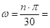
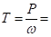
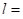
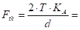
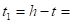
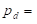
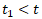
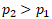
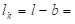

Прорачун моделирање и цртежи еластичне спојнице са гуменим ваљкастим улошцима шк. 2022/23. год.
Израчунати потребне параметре и моделирати еластичну спојницу на основу улазних података:
Снага која се преноси:  37
37 
Број обртаја погонског зупчаника:  710
710 
Материјал вратила – обода спојнице: Č.0545
Материјал клина: Č.0645
Материјал осовинице са навојем: Č.0545
Фактор спољних динамичких сила:  1.25
1.25
На другој спојници, на којој нема уложака од гуме или полиуретана усвојити да је дужина дела спојнице на месту осовинице са навојем: Т 3.3 М.Е.II
Усвојити подлошку JUS M.B1.011 и навртку JUS M.B1.601 крупног корака шестоугаону, осовиницу са навојем JUS M.C3.060.
Потребно је:
- с обзиром на радне услове димензионисати спојницу са улошцима од гуме или полиуретана (решење 3.7.б – други обод спојнице има цилиндричне проврте), усвојити стандардни димензије Т3.3 М.ЕII – спојнице са улошцима и осовиницама са навојем према JUS M.C3.060,
- проверити средњи површински притисак између гумених уложака и осовинице усвојен у тачки 1. Проверити напон савијања у осовиницама на месту укљештења,
- изабрати и проверити нормални клин без нагиба JUS.MC2.060 за спој вратила и главчине на напон смицања и површински притисак,
- моделирати осовиницу са навојем, навртку и подлошку,
- моделирати оба обода спојнице, уложак од гуме и склоп елемената усвојен - проверен на оптеређења у претходним тачкама,
- урадити радионичке цртеже оба обода спојнице и склопни цртеж на А3 формату папира,
- остале параметре усвајати према препорукама (конструктивно).
Литература - извор знања:
Машински елементи II - Спасоје Драпић
Снага која се преноси: 37
Број обртаја погонског зупчаника: 710
Угаона брзина:
 74.35103 
Обртни момент:
 497.6394
497639.4 

За материјал вратила-обода спојнице (по поставци задатка) Č.0545 из Т 2.3 М.Е.I усвајамо трајну динамичку чврстоћу на једносмерну промену напона за случај увијања:
 170
170 
Дозвољени напон увијања:
 56.66667
56.66667
Степен сигурности
усвајамо из T2.5:  3
3

Називни пречник вратила:
 38.24
38.24 
на израчунати пречник вратила додаје се дубина жљеба за клин и стандардизује се пречник вратила:
израчунатом пречнику вратила
38.23746 одговара дубина жлеба за клин:
 4.9 , те добијамо потребан пречник вратила:
4.9 , те добијамо потребан пречник вратила:

Стандардне дужине клинова: 20, 25, 28, 32, 36, 40, 45, 50, 56, 63, 70, 80, 90, 100, 110, 125, 140, 180, 200, ... , 400, а за нормалне клинове и још: 5, 8, 10, 12, 15, 16, 18.
43.13746
додавањем дубине жлеба за клин на израчунати пречник вратила прелазимо на пречнике вратила: од 44 до 50 mm (усвајањем првог већег стандардног пречника), због чега додајемо дубину жлеба за клин :
5.5 , те добијамо потребан пречник вратила:
43.74 и стандардизујемо пречник вратила Т 0.1 М.Е.I
како се из T 0.1 усвајају вредности за ред R5, R10, R20, R40, па тек на крају подешени бројеви, то се усваја:

пречник вратила на месту спојнице:
 45
45
провера исправности усвојеног клина:
39.5 >  38.24
38.24
Из T 3.3 M.E.II, за оптерећење: 605 усвајам мере за спојницу:
25 до 60
2
 32.5
32.5
200
145
2860
28
14
95
120
којима одговара  8 уложака са навојем за коју се из Т 6.1. M.E.I. одређује
пречник осовинице
:
8 уложака са навојем за коју се из Т 6.1. M.E.I. одређује
пречник осовинице
:
14
дужина дела са навојем:
18
пречник навоја:
12
дужина жлеба за прелаз - израду навоја:
3
димензије подлошке за осовиницу ∅ 14 су:
највећи пречник:
28
пречник отвора:
15
висина подлошке:
 2.5
2.5
димензије навртке за навој М12 су:
отвор кључа:
19
пречник описане кружнице око навртке:
 21.9
21.9
висина навртке:
 10
10

дужина осовинице се рачуна:
79.5
усвајам стандардну дужину осовинице:  80
стандардна ознака усвојене осовинице је:
осовиница са навојем
сада се може израчунати растојање између обода спојнице, у другом ободу спојнице део без навоја се наслања на упуст за осовиницу:
5.5
усвајам растојање између спојница:
3
решење сл. М.Е.II 3.7.б
T 4.7 M.E.II
називном пречнику од 45 одговара клин:
14
 9
9
5.5
 0.5
0.5
дужина клина реално могућа:
80
јер је дужина спојнице:
95
Стандардне дужине клинова: 20, 25, 28, 32, 36, 40, 45, 50, 56, 63, 70, 80, 90, 100, 110, 125, 140, 180, 200, ... , 400, а за нормалне клинове и још: 5, 8, 10, 12, 15, 16, 18.
Обимна сила на клину:
 27646.63 
Дубина жлеба за клин у главчини:
 3.5
Усвајамо да је главчина од челика или челичног лива.
За главчину од челика или челичног лива , корисна дужина клина је:
Дозвољени површински притисак:
 75 до 100
Површински притисак између клина и вратила
се рачуна по обрасцу: 
Површински притисак између клина и главчине
се рачуна по обрасцу: 
Како је:  следи да је p1">
Стр. 108 М.Е.I усвајамо стандардну дужину клина:
80
корисна дужина клина је:
 66
Површински притисак између клина и главчине:
 59.8412 < 75 до 100
59.8412 < 75 до 100
усвајам два клина промера под 120°
Ознака усвојеног клина: Клин без нагиба 14x9x80 Č.0645 JUS M.C2.060
Напон смицања:
 14.9603
14.9603
Из Т 2.3 М.Е.I за Č.0645:
 320
320
Степен сигурности
усвајамо из T2.5: 3
Дозвољени напон смицања:
 85.33333
85.33333
Напон смицања је мањи од дозвољеног:

друго вратило треба да буде већег пречника , па усвајам пречник из Т 0.1. М.Е.I:
47.5 коме одговара клин истих димензија као и код вратила I, само је обод спојнице дужи, па је клин дужи:
дужина обода спојнице:
120
Стр. 108 М.Е.I усвајамо стандардну дужину клина:
110
Површински притисак између клина и главчине
се рачуна по обрасцу:
корисна дужина клина је:
96
Обимна сила на клину:
26191.55
Површински притисак између клина и главчине:
77.95103 < 75 до 100
усвајам један клин
Ознака усвојеног клина: Клин без нагиба 14x9x110 Č.0645 JUS M.C2.060
Напон смицања:
19.48776
Напон смицања је мањи од дозвољеног:
осовиница је оптерећена на савијање, које представља једносмерно промењиво оптерећење за осовиницу:
трајна динамичка чврстоћа на једносмерно промењиво оптерећење за материјал осовинице Č.0545 усвајамо из T 2.3 M.E.I
 350
350
момент савијања се рачуна по једначини:
27616.84
обимна сила на једном улошку - осовиници:
1072.499
аксијални отпорни момент инерције површине попречног пресека пречника осовинице који трпи оптерећење:
269.3916 
напон савијања износи:
102.5156
провера степена сигурности: 3.414114
степен сигурности задовољава треба да буде у границама 2 до 3! Посматрани попречни пресек је предимензионисан, или је површина п.п. одређена из других услова.
провера средњег површинског притиска између осовинице и уложака:

дозвољени површински притисак за улошке од гуме:
 2.4
2.4
средњи површински притисак:
2.35714
Површински притисак задовољава:
На цртежу кота 51 треба да буде 51.1 (погледај Т 4.7)!
На цртежу кота 48.5 треба да буде 48.6 (погледај Т 4.7)!